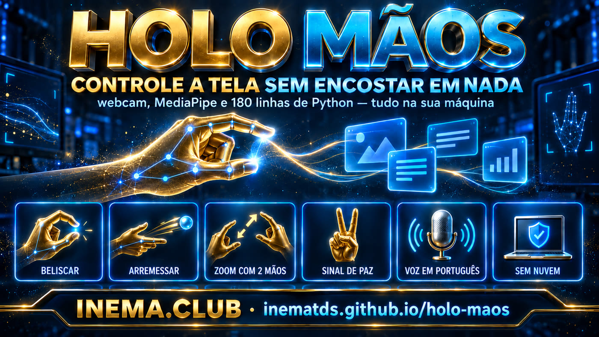
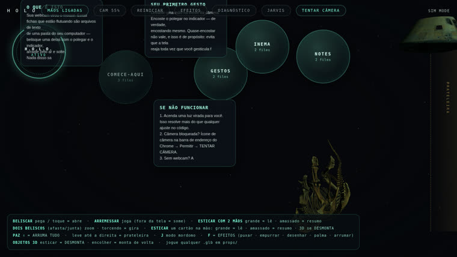

Belisque um cartão no ar e arraste. Junte as duas mãos para dar zoom. Faça o sinal de paz e tudo volta ao lugar. Em português, e nada sai do seu computador.

O reconhecimento das mãos acontece dentro do próprio navegador. Não existe servidor de IA no meio, nem cadastro, nem chave de API.
O MediaPipe do Google vem dentro da pasta do projeto — não é baixado na hora de usar. Funciona offline, e as imagens da câmera não chegam a servidor nenhum.
Legenda, avisos de câmera e o mordomo falando: 25 trechos traduzidos por um patch versionado. A voz usa o sintetizador do próprio computador, em pt-BR.
Python 3 e Chrome. Nenhum pip install, nenhuma dependência: o servidor tem 180 linhas e usa só a biblioteca padrão.
Todo o caminho acontece dentro da aba do navegador. O servidor Python só entrega a página e lê os seus arquivos de texto.
Entrega a página, lista os arquivos .md da pasta que você apontar e devolve os modelos 3D. Subpastas viram orbes; arquivos soltos viram cartões.
Lê as mãos, decide se houve belisco, arremesso, zoom ou sinal de paz, e aplica física de verdade — inércia, atrito e batida nas bordas.
Não há modelo de linguagem, não há nuvem e não há leitura do seu conteúdo. O único "modelo" é o rastreador de mãos, e ele roda local.
Testado no Linux (Ubuntu) em 21/09/2026. O autor original documenta Mac e Windows; roda nos três sem mudar nada.
Já vem no Mac e no Linux. No Windows, baixe em python.org. Nada além da biblioteca padrão.
# confira a versão python3 --version
É o navegador onde o rastreamento roda melhor. Você vai precisar liberar a câmera uma vez.
# sem webcam? use o modo demonstração http://localhost:4890/?sim=1
Só para baixar o projeto original, que fica num repositório separado (é dele o código do motor).
git --versionComandos reais, na ordem. Do começo ao fim leva cerca de dois minutos.
Ele traz a camada em português, as notas de exemplo e os scripts.
git clone https://github.com/inematds/holo-maos.git cd holo-maos
O motor é do Zubair Trabzada, licença MIT, e fica no repositório dele. Não copiamos os 77 MB — o script clona direto da fonte.
bash scripts/baixar-upstream.sh # clona em upstream/
São 25 substituições exatas: legenda, avisos de câmera, falas do mordomo e a escolha da voz pt-BR. O script guarda o arquivo original ao lado (holo.html.original) e avisa se o autor mudou algum trecho, em vez de traduzir pela metade.
python3 scripts/aplicar-ptbr.py # [ptbr] 25 trecho(s) traduzido(s), 0 perdido(s) # [ptbr] holo.json apontando para .../notas-inema
Porta 4890. Se ela estiver ocupada, troque com HOLO_PORT.
cd upstream && python3 server.py # porta ocupada? HOLO_PORT=4891 python3 server.py
Libere a câmera quando o Chrome pedir. Acenda uma luz virada para você — isso resolve mais do que qualquer ajuste no código.
http://localhost:4890 # com câmera http://localhost:4890/?sim=1 # sem câmera: mãos sintéticas
Qualquer pasta com arquivos .md ou .txt. Subpastas viram orbes; arquivos soltos viram cartões na mesa.
# upstream/holo.json {"folder": "/caminho/para/suas/notas"}
As quatro constantes que governam a sensibilidade ficam no topo do script, em upstream/holo.html.
// número MAIOR = mais fácil de pegar const PINCH_IN = .30, PINCH_OUT = .42, PINCH_EARN = 2; const AMP = 1.45; // alcance do braço até a borda da tela
Se você decorar um só, decore o sinal de paz: ele desfaz qualquer bagunça.
BELISCAR pega o cartão, arrasta, arremessa com inércia belisco rápido abre a pasta-orbe ou abre a nota arremessar para fora da tela = some (reabra a orbe) 2 beliscos afasta/junta = zoom · torcendo = gira esticar 2 mãos grande = lê · amassado = a voz resume PAZ ✌ (segurar) arruma tudo de volta tecla F efeitos: puxar, empurrar, desenhar, palma tecla J modo mordomo: fica dourado e fala português tecla H desliga as mãos e usa só o mouse
Como substituto do mouse no dia a dia, não serve: braço no ar cansa em minutos. O uso real é outro.

Passar slide com um gesto, de longe, sem apontador na mão.
Padaria, clínica, recepção: ninguém encosta na tela. Higiene sem leitor de gesto caro.
Quem tem dor no punho ou limitação de movimento opera a tela sem mouse.
Sem promessa do que não existe: abaixo, o estado real em 21/09/2026.
?probe=1 passou 26/26 numa execução e depois passou a parar em 2/4 — no código original também, sem o nosso patch. É o teste tocando o cartão antes de a câmera mapear a tela, em navegador sem interface. Com câmera de verdade não atrapalha.